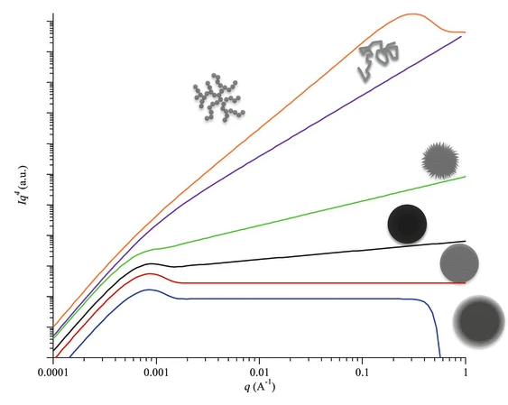
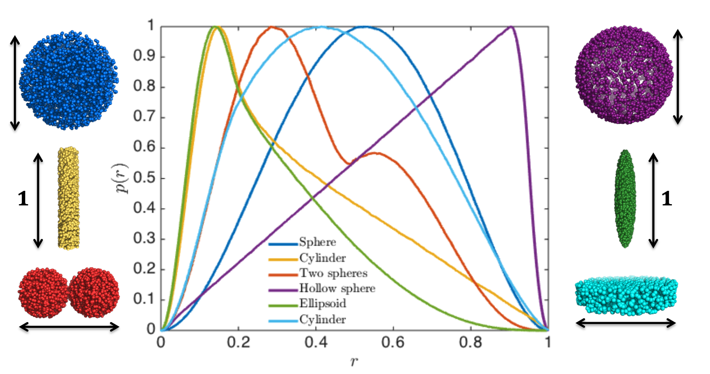
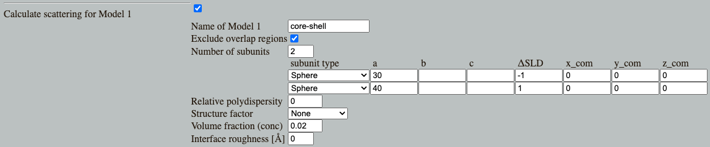
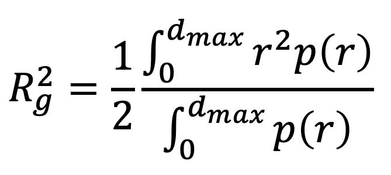

Home
Tutorial: Model Free Analysis
Tutorial contributors: Andreas Haahr Larsen.
Before you start
- Python or similar for importing and plotting data (including numpy, scipy and matplotlib).
Learning outcomes
Overall learning outcome is to be able to retrieve strucutural information from a SAXS or SANS dataset before doing more detailed modelling, e.g. with form factors. Subgoals include:- Learn to do a Guinier analysis and retrieve the radius of gyration.
- Be able to create a Porod plot and understand its interpretation.
- Use Kratky plot to assess the whether a particle is compact/well-folded or disordered/unfolded.
- Do an indirect Fourier transformation and retrieve structural parameters, Rg and dmax.
- Estimate particle shape using the pair distance distribution (obtained via indirect Fourier transformation).
- Be familiar with ab initio modelling, including possibilities and limitations.
Challenges
If you can solve these challenges, you have (probably) learned the above.By following the tutorials below the challenges (Part 1-5), you will acquire skills and knowledge that can be applied to solve the challenges.
- Challenge 1: You have measured a sample of RNase A in D2O with SANS (download SANS data). What is the overall size and shape of this protein?
- Challenge 2: You have measured the AMPA receptor (a membrane protein involved in neuronal signalling) D2O with SANS contrast variation (to avoid detergent signal, see also the Contrast variation tutorial). The protein was measured in the apo state, i.e. without any ligands bound (download SANS data).
You would like to find out if the overall size of the solution structure (as measued in SANS) is different from the crystal structure (measured with x-ray crystallography) - is this the case? The theoretical radius of gyration was calculated from the crystal structure to be ca 57 Å.
You also measured GluA2 in the presense of AMPA, which is an agonist (an activating molecule) for GluA2, (download SANS data) - does this induce a structural change compared to the apo state? - Challenge 3: You have measured the microtubule-associated protein 2 (MAP2) in SAXS (download SAXS data). Is it folded or unfolded under the conditions you measured it?
- Challenge 4: This challenge is also part of the Sphere tutorial. But what can you tell without any modelling with form factors? Here comes the challenge:
A sample of discoidal particles (i.e. shaped like disc/short cylinders) was measured in SAXS at neutral pH (download neutral pH data) and pH 5.0 (download low pH data). What effect does the pH change have on the particles and their interaction? - Challenge 5: You have measured a sample of mixture of Polysorbate 80 and Myristic acid in SAXS (download SAXS data). What can you tell about the stucture these molecules form?
Part 1: Guinier plot and Guinier analysis for Rg determination
The Guinier approximation is valid at low values of q. From a Guinier analysis you can derive the (contrast-weighted) radius of gyration, Rg of the particles. I.e. it gives an idea about the size of the particles.
Since Rg also depends on the shape (more extended particles have larger Rg), it gives a hint about the particle shape as well.

There are tools for automatic Guinier analysis, including ATSAS autorg and bioxtas RAW auto Guinier, but here, you will learn to do it manually:
- Download the SAXS data for the protein lysozyme at the small-angle scattering biological data bank (Download files > curve (dat))
- Import and plot the data. Use a log scale for the y-axis. You can use any program for this, but if you use Python, you can use this python plotting script.
- Generate a Guinier plot, by plotting log(I) vs q2. You may use this script
- The Guinier approximation claims that the low-q part of the curve is linear. Determine this region in q (e.g. by zooming in on the plot). The linear region is called the "Guinier region".
- Determine the maximum value of q-squared (q2) at which the data is still linear in the Guinier plot.
- The Guinier approximation is I = I(0)exp(-q2Rg2/3). Or expressed differently: ln(I) = ln(I(0)) - (Rg2/3)q2. So the forward scatteing, I(0), is determined by the intersection and the radius of gyration, Rg, by the slope.
- Make a Guinier analysis by (1) fitting a straight line to the curve, (2) determine the slope, (3) determine the intersection with the y-axis, and derive I(0) and Rg. You may use this Python script (you need to set the qmax in the scrip).
- As a rule of thumb, the Guinier approximation is valid up to qRg = 1.3 for globular particles (i.e. sphere-like particles), and up to qRg = 1.0 for elongated particles (e.g., cylinders). Lysozyme is globular. Check your value of qRg and adjust qmax accordingly.
- Is this Rg consistent with the Rg reported in the SASBDB entry? (within +/- 1 Å)
- Aggregation in the sample
- Oligomerization
- Change of shape (more elongated particles have larger Rg)
Part 2: Porod Analysis
The Porod approximation is valid at large values of q. It states that the intensity is proportional to q-4 at large values of q.
Using the lysozyme SAXS data again, plot the data as Iq4 vs q, on a log-log scale. You may use one of the previous scripts as template.
Try to determine the Porod region for this data - i.e. where is Iq4 vs q approximately constant (it may fluctuate around a constant value due to noise in data)
If the slope of the Porod plot at large q values is different from q-4, this can be due to surface roughness, and a Porod analysis is an estimate of the surface roughness of a material from the slope in a Porod plot:

The Porod region is also sensitive to background subtraction, as can be seen by adding a constant background to the intensity and doing the Porod plot. Your may use this script to see the effect of that. In that script, a background of 1 was added to the intensity.
This background sensitivity means that the Porod plot is a good tool for determining the correct level of constant background subtraction, which stem from incoherent scattering.
Part 3: Kratky plot
The Kratky plot (Iq2 vs q) carries information about the structural flexibility of a particle:

This interpretation assumes that the particle is homogeneous, i.e., the scattering length density is approximately the same throughout the particle. Proteins constitute an important class of particles where the scattering length is quite constant, so Kratky plots are valuble for model-free protein structure determination. Micelles of detergents og block copolymers, on the other hand, are an examples of a particles that are not homogeneous.
Make a Kratky plot for the SAXS lysozyme data. You may use this script, but you need to set the background level (begin with background = 0).
Note that a Porod plot (see above) may be a good help to determine the correct background level.
Lysozyme measured under these conditions is (predominantly) folded - you can see that from the Kratky plot by comparing with idealized Kratky plots.
Part 4: Indirect Fourier Transformation
As the coherent scattering can be calculated by a Fourier transformation of the particle, then an inverse Fourier transformation of the data should give back the structure. Unfortunately this is not the case for small-angle scattering, because:
- Structural information is lost due to random orientation of the sample
- Phase information is also lost (the phase problem). The wave amplitude is measured by the detector, but the phase is not.
- There is noise in data.
- The data is measured in a finite range (between qmin and qmax), whereas a Fourier tranformation requires data from minus infinity to plus infinity.
This representation is called the pair distance distribution and is written p(r). It is informally called the "p-of-r-function". For a homogeneous particle, it is simply a histogram of how many pairs of scatterers that have a specific distance, r, between them. This pair distance distribution is characteristic for specific shapes:

Thus, without any modelling, you may can get an idea of the structure of your particle of interest.
Go to Shape2SAS and press the green "Submit" button with the default values. Then you will see the p(r) for a 50 Å sphere, along with the scattering calculated. A couple of observations
- The pair distribution is symmetric, as a sphere is symmetric in all directions.
- p(r) starts in zero and goes to zero at some value of r. The latter is the maximum distance between any pair in the particle and is denoted dmax. For a sphere, dmax equals the diameter.
- The most common distance between pairs of scatterers in a sphere is equal to the radius.
To see and compare the p(r) from various paticles, go back to Shape2SAS and click the box "Calculate scattering for Model 2" to choose another shape or size as Model 2 (e.g. a cylinder, or a larger sphere). Press "Submit"
If the particle is not homogeneous (the contrast is not approximately the same in the whole particle), then the p(r) is harder to interpret.
This is because the p(r) is a distribution weighted with the product of the scattering lengths for scattering pairs, or rather the excess scattering length (contrast). This number can be negative. So the contribution from a scattering pair may be negetive if one has negative and one has positive contrast.
This will often lead to bumps or oscillations in the p(r). In Shape2SAS, simulate a spherical core-shell particle with negative core contrast (ΔSLD=-1) and and positive shell contrast (ΔSLD=1)

In this case, you may get both positive and negative parts in the p(r). The negative parts come if, at a given distance, there are most pairs having contrasts with opposing signs (i.e. one has positive and one has negative constrast.)
There are multiple programs for indirect Fourier transformation of SAXS and SANS data. One is BayesApp (it uses a Bayesian refinement method, hence the name).
Note that BayesApp can also do Guinier plots, Porod plots, and Kratky plots if opted for.
Try to do an indirect Fourier tranformation of the lysozome data using BayesApp. You may give an estimate of the dmax (ca 50 Å) to help the algorithm find a solution faster.
By comparing with the p(r) from a sphere, you can see that lysozyme is globuler (i.e., spherical-ish).

A good quality check of data is to compare the Rg obtained via the p(r) with that obtainedb by Guinier analysis.
For non-homogeneous particles, you may get negative contributions to p(r). In that case, it is necessary to allow BayesApp to use negative values for p(r):
- To see the effect of NOT doing this, try to run BayesApp on the simulated micelle data which had negative contrast in the core. I.e. the data you simulated using Shape2SAS (or download this simulated dataset). You may help the algoritm by providing an approximative value for the maximum distance.
- You will notice that the p(r) does not look like the one you got in Shape2SAS.
- Now, allow BayesApp to use negative values in p(r) by setting Transformation/Regularization to "Negative", and rerun.
Part 5: Ab initio modelling
If you know your measured particles are identical and homogeneous, then there are algorithms, that can estimate the 3D shape of you particle. The most commonly used is DAMMIF.
DAMMIF (and similar bead models) moves around dummy atoms and calculates the scattering from these, using the Debye equation, until the calculated scattering matches the experimental scattering

Note that "s" on the x-axis is the same as q.
There are thousands of bead models that equally well fits with the data (i.e., it is an ill-posed). Therefore, the algorithm apply constraints, e.g., that the 3D model should be compact (see a description in the DAMMIF paper). Moreover, the algorithm is typically run multiple times and the refined structure is then an average of the possible solutions.
Even with these constraints, the resulting structures should be interpreted with care due to the highly ill-posed nature of the problem. That said, ab initio modelling is very useful and widely applied, especially for protein structure determination..
- You can try to do ab initio modelling of the lysozome data by following these steps
- Go to the online version of DAMMIF, which is part of the ATSAS software.
- Make a user and sign in.
- The program asks for a "GNOM file". GNOM is a program like BayesApp, that calculates the p(r). GNOM is also part of the ATSAS package. You can use this GNOM file.
- Use these settings: Angular units (of q): 1/Å; Symmetry: P1 (no symmetry); Anisometry: Unknown; Mode: Fast: Run DAMMIF 3 times.
- Press SUBMIT
- You are notified by email when your result is ready (probably after 5 min)
The obtained 3D structure could be refined by running more instances, taking the average of these and run in the slow mode.
Note that this ab initio modelling assumes particles with homogeneous contrast. There are, however, ab initio algorithms that allow multiple contrasts, e.g. DENSS. However, this makes the problem even more ill-posed, i.e., more possible solutions can fit the data. So the structures should be interpreted with care.
Feedback
By filling this feedback form you can help us improve the tutorials (it takes 2 min).